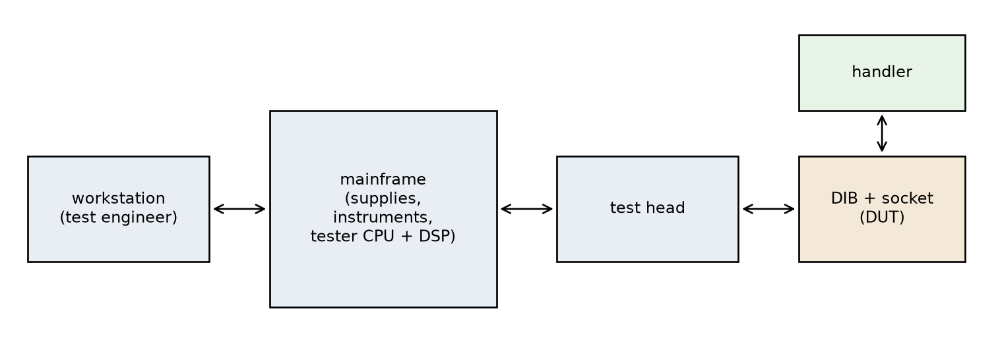

Testing
Design of Complex Integrated Circuits
Mixed-Signal Testing Challenges

Mixed-Signal Testing Challenges

Continuity Test

Figure 62: Continuity test: the tester forces a small current into the pin and measures the resulting voltage across the ESD protection diodes of the DUT.
Memory Test

JTAG Test and Debug Port

Scan-Path Test

Figure 65: Limitation of the stuck-at fault model: a CMOS NAND gate with an open defect in the pull-up path of \(B\).
Scan-Path Test

AC Parametric Tests